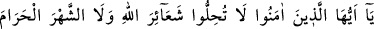
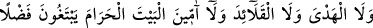
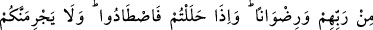
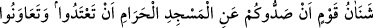
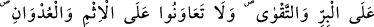
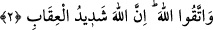

2- Ey îman edenler! Allah’ın (koyduğu, dinî) işâretlerine, haram aya, (Allah’a
hediye edilmiş) kurbana, (ondaki) gerdanlıklara, Rablerinin lütuf ve rızasını
arayarak Beyt-i Haram’a yönelmiş kimselere (tecavüz ve) saygısızlık etmeyin.
İhramdan çıkınca avlanabilirsiniz. Mescid-i Haram’a girmenizi önledikleri için bir
topluma karşı beslediğiniz kin sizi tecavüze sevketmesin! İyilik ve (Allah’ın
yasaklarından) sakınma üzerinde yardımlaşın, günah ve düşmanlık üzerine
yardımlaşmayın. Allah’tan korkun; çünkü Allah’ın cezâsı çetindir.
“Ey îman edenler, Allah’ın işâretlerine, saygısızlık etmeyin.” Bu âyet, ismi Şureyh
b. Dubey’a el-Bekrî olan Hatîm hakkında nâzil olmuştur. O, Yemâme’den gelmiş, atını
şehir dışında bırakarak Medîne’ye girmişti. Sonra Rasûlullah (s.a.v.)’in huzuruna vardı
ve:
“Sen insanları neye dâvet ediyorsun?” diye sordu.
Nebî (s.a.v.):
“Allah’tan başka ilah olmadığına şehâdet etmeye, namaz kılmaya ve zekâtı vermeye
dâvet ediyorum.” buyurdu.
Bunun üzerine Şureyh şöyle dedi: “Güzel. Ancak benim bâzı büyüklerim var, onlar
olmadan hiçbir şeye karar vermem. Umulur ki ben müslüman olur, onları da getiririm”
dedi.
Rasûlullah (s.a.v.) ashabına daha önce; “Sizin meclisinize Rabîa’dan şeytanın diliyle
konuşan bir adam gelecek.” buyurmuştu. Şureyh gittikten sonra da şöyle buyurdu:
“Buraya kâfir yüzlü birisi olarak geldi ve hâin olarak dönüp gitti. Bu adam
müslüman olmaz.”
Şureyh, giderken Medîne halkının yayılmakta olan develerini önüne katıp götürdü.
Onun peşine düştüler, fakat yakalayamadılar.
Bir sene sonraki hac mevsiminde Şureyh Yemâme’den Bekr b. Vâil hacılarıyla hacca
geldi. Yanında büyük miktarda ticaret malı da vardı. Getirdiği kurbanlıklarına da
gerdanlık takmıştı.
Müslümanlar Hz. Peygamber (a.s)’a: “Şu Hatîm, hacca gelmiş. İzin ver de, işini
bitirelim.” dediler. Peygamber (a.s): “O, kurbanlıklarına gerdanlık takmış.” buyurdu.
Ashâb: “Yâ Rasûlallah, bu bizim ancak Câhiliye döneminde yaptığımız bir şeydir.”